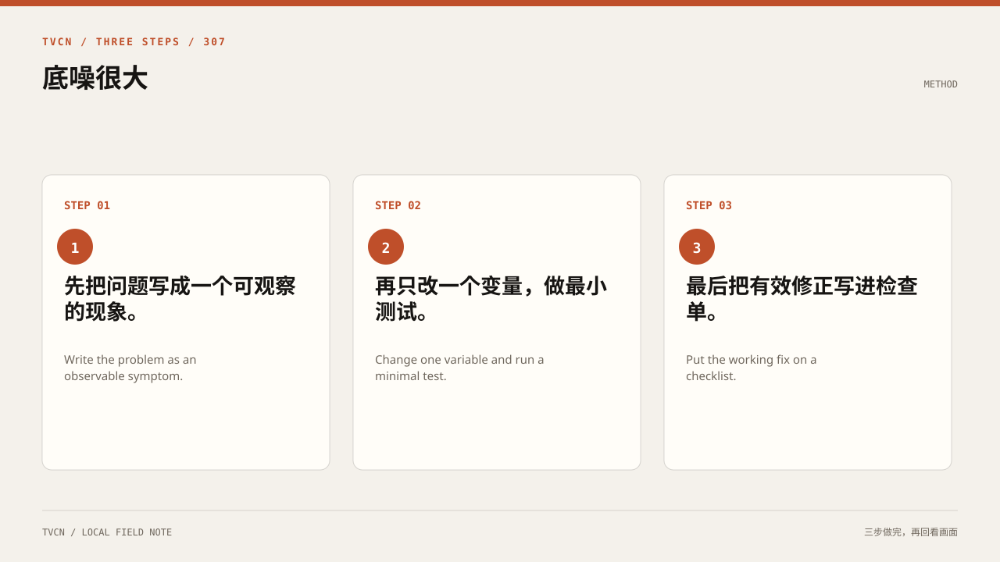

现场
关空调、换线、把增益降到 -12 dB；麦克风最后换。
怎么做
- 关空调、冰箱和灯，录三十秒静音，听底噪从哪里来。
- 换插座、换线，把增益放在录音机而不是麦克风。
- 让人物靠近麦，另录一条环境声做后期铺底。
别踩
别一上来买新麦；噪声可能来自房间。
DIAGRAM / Method card
三步流程

三种原因
针对“底噪很大”，先按三个方向排查；每次只改一个变量，改完录 30 秒对比，看变化跟着哪个环节走。
| 原因 | 现场信号 | 5 分钟验证 |
|---|---|---|
| 增益结构不对 | 麦克风增益拉得很高，底噪跟着上来 | 把增益降到峰值 -12dBFS 再听 |
| 房间反射 | 空房间有持续嗡嗡声，换位置也不消失 | 录 30 秒房间声，移动麦克风 |
| 线材或接口 | 换一根线底噪就变，接口松动有咔哒 | 换线、换输入、换电池逐项试 |
现场诊断
- 先录 30 秒安静房间声，不要说话，单独听底噪。
- 把对白轨 solo，听噪声是持续嘶声、低频嗡声还是间歇咔哒。
- 换线材、换输入口、换供电各做一次，确认噪声跟着哪个环节走。
修法
底噪不是靠后期一键降噪解决的。先把麦克风靠近、把增益分两级、把房间里的持续噪声源关掉。
- 麦克风离嘴 15–20 厘米；领夹固定在衣领内侧，避开摩擦。
- 增益分两级：录音机输入先到 -18dBFS，再微调；对白峰值控制在 -12dBFS 左右。
- 关空调、冰箱、投影风扇；关不掉的，录一条房间声留作匹配。
- 线材绕开电源适配器；无线接收机与发射机保持视线。
- 后期降噪只做到“听不出处理”，不要追求绝对安静。
失败案例
处理“底噪很大”时，下面三种做法会更糟；先选一个替换动作，别同时改三个变量。
| 失败做法 | 为什么会更糟 | 替换动作 |
|---|---|---|
| 降噪拉满 | 对白变得空洞，齿音和尾音被吃掉 | 降噪控制在 6–10dB，保留房间感 |
| 开自动增益 | 句间底噪忽大忽小，剪辑时跳 | 手动增益，拍前锁死 |
| 只换麦克风 | 噪声源在房间或线材，换麦无效 | 按房间、线材、接口顺序排查 |
验收表
验收不是“感觉好了”，是这四项都能指认、能回放、能记录。
| 验收项 | 通过线 | 记录 |
|---|---|---|
| 房间声 | 30 秒 room tone 可循环，没有突然的空调声 | 保存原始文件 |
| 对白峰值 | 正常说话峰值约 -12dBFS，不削波 | 录音机表头 |
| 底噪 | 安静段噪声稳定，不随句子起伏 | solo 对白轨 |
| 可懂度 | 每个词清楚，不需要靠字幕猜 | 戴耳机听一遍 |
图片说明：本页封面、图解与步骤图是编辑示意或结构图，不是本页实测照片，也不能当作器材测试证据；AI 辅助生成的图会在图注标出。判断器材或画面，以正文的测试条件与现场记录为准。